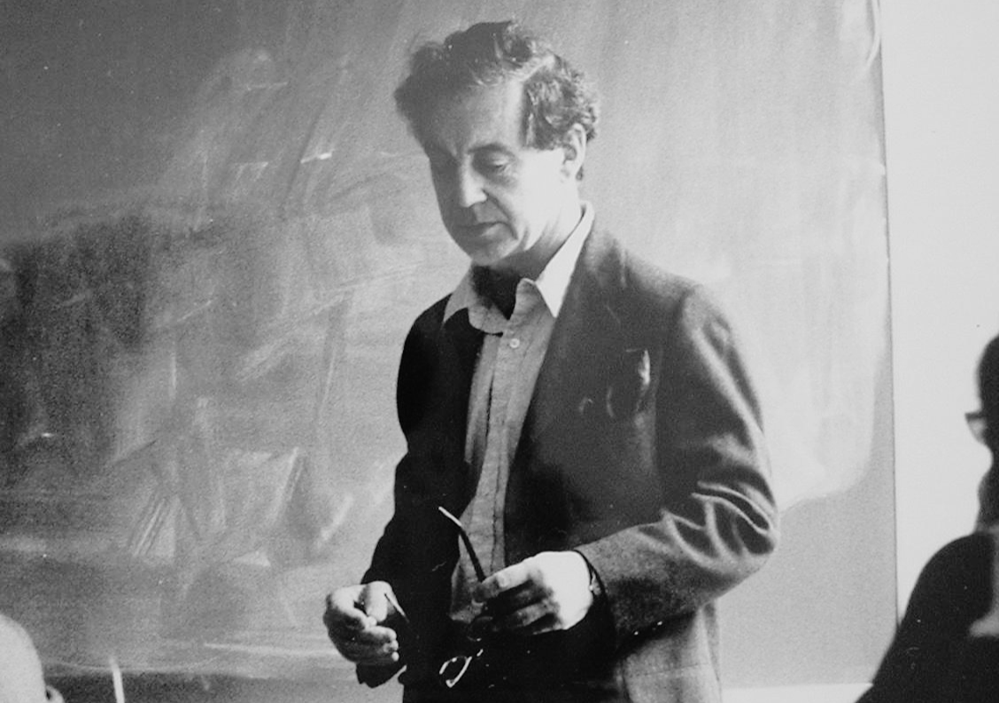
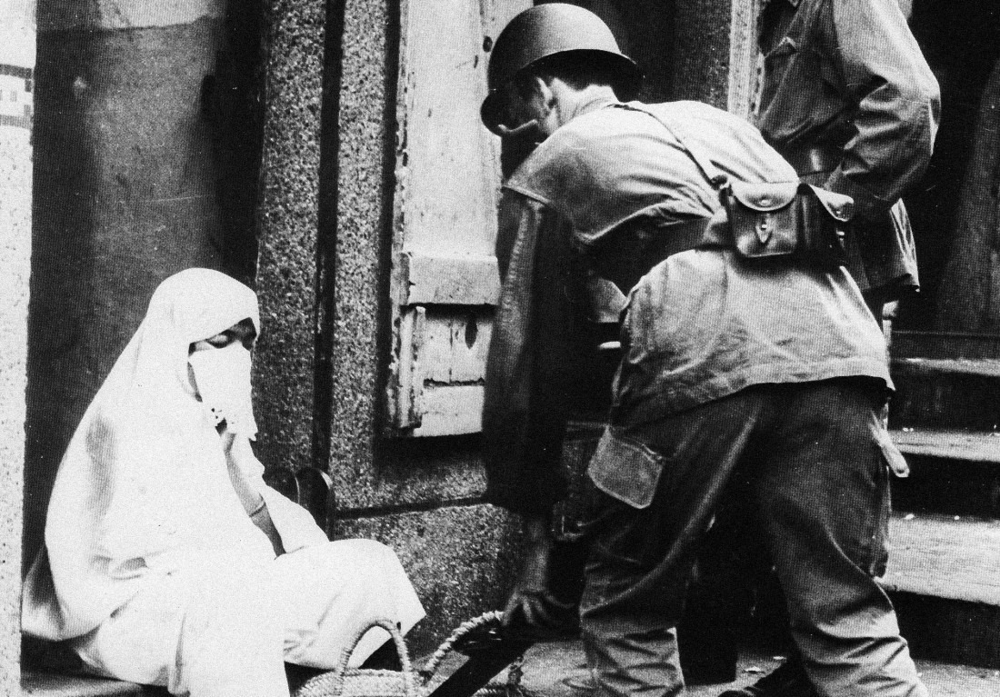

Comment une République fabrique-t-elle, dans sa propre loi, un homme français sans citoyenneté ?
Le sous-citoyen est un dispositif juridique — écrit, voté, reconduit pendant près de soixante ans. Ce module monte le dossier, pièce par pièce.
Un régime pénal d’exception réservé aux « indigènes musulmans non naturalisés ». Un assemblage, selon Sylvie Thénault — la loi de 1881, des arrêtés du gouverneur général, des décrets : pour l’abolir, il faudra démonter la machine pièce par pièce.
Un régime pénal d’exception réservé aux « indigènes musulmans » : 27 délits qui n’existent que pour eux, punis sans tribunal, sans appel.
Le sénatus-consulte pose le mot « français » et lui retire aussitôt les droits civiques. La base de tout l’édifice.
Crémieux naturalise les juifs, écarte les musulmans le même jour. Le critère devient religieux : qui entre, qui reste dehors.
L’infraction spéciale s’appuie sur les deux textes précédents : punir, hors tribunal, ceux que la loi a déjà mis à part.
Votée pour sept ans (article 3), la loi de 1881 est reconduite à chaque échéance — huit fois — jusqu’à son abolition en 1944. Le provisoire est devenu une machine permanente.
Ce que le droit inscrit sur le papier, l’œil du colon apprend à le lire sur les corps. Le statut juridique meurt en 1944 ; le regard, lui, survit.
Le mot de stigmate servira à désigner un attribut qui jette un discrédit profond.Erving Goffman · Stigmate · Minuit, 1975 (éd. orig. 1963)


L’ordonnance du 7 mars 1944, signée à Alger par le Comité français de la Libération nationale (CFLN), abolit le statut de l’indigénat. La catégorie juridique disparaît.
Défenseur des droits, 2017 : les jeunes hommes perçus comme arabes ou noirs sont contrôlés près de 20 fois plus souvent que les autres. Le statut a disparu, le geste de tri demeure.
Et c’est l’écart qui compte. Le contrôle au faciès n’a aucune base légale : il est contestable devant un juge, condamné en droit. L’indigénat, lui, était la loi. La continuité est dans le geste de tri, pas dans le régime — et c’est ce qui la rend attaquable aujourd’hui.
Il dit ne pas y être « personnellement favorable », mais que « la question sera un jour posée ». Pas une loi : une parole. Reste que la matrice de l’indigénat — un droit indexé sur l’appartenance — y refait surface.
Ce qu’on emporteLe pouvoir de classer a changé d’outil sans changer de cible : il a quitté le code pour se loger dans l’œil.